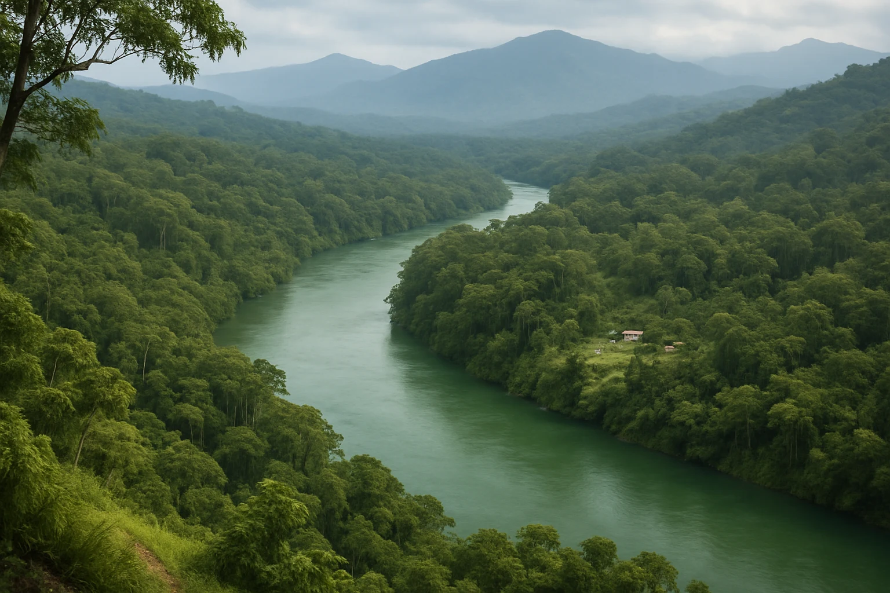

Gobernanza ambiental
Conservar el territorio empieza por escuchar a quienes lo habitan.

La conservación
se construye en comunidad.
Ambiente, participación y decisiones compartidasProteger la naturaleza es una tarea colectiva.
¿Quién decide sobre el territorio? ¿Qué lugar ocupan las comunidades en su conservación? Este episodio explora cómo el diálogo, los saberes locales y la participación pueden transformar las decisiones ambientales.
A través de un caso hipotético en la Amazonía colombiana, conocerás la diferencia entre excluir a las comunidades e involucrarlas en el cuidado de sus recursos.
Al terminar, podrás…
- Reconocer los actores y principios de la gobernanza ambiental.
- Distinguir la información, la consulta y la participación en las decisiones.
- Valorar el conocimiento ecológico tradicional en la conservación.
Una pregunta para llevar a tu territorio
¿Qué cambiaría en un proyecto de conservación de tu comunidad si todas las voces pudieran participar en las decisiones?
Lee mientras escuchas
Selecciona un fragmento para escucharlo. Transcripción automática; puede contener imprecisiones.
Cargando transcripción…
Escuchar, comprender, conectar
Tres preguntas para recuperar las ideas del episodio. Sin calificación: puedes volver a intentarlo.
Ahora, conecta con tu contexto
Piensa en un proyecto de conservación cercano. ¿Quién toma las decisiones? ¿Cómo se distribuyen los beneficios? ¿Qué conocimientos de la comunidad deberían tenerse en cuenta?
Este ejercicio es personal y opcional. Tus respuestas no se guardan ni se envían a docentes o a otras personas; nadie las revisará ni calificará.